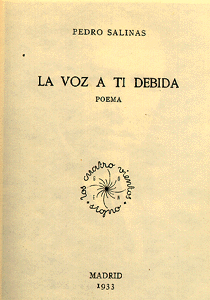

Pedro Salinas

Libros:
Seguro Azar

Poemas:
35 bujías
Poema recitado:
La voz a ti debida

Poemas:
Ayer te besé en los labios
Poema recitado:
Para vivir no quiero
Poema recitado:
Perdóname por ir así buscándote
Cantautor/a:
Daniel Mata
Daniel Mata
Si me llamaras
Poema recitado:
Razón de Amor

Poemas:
Razón de amor
Poema recitado: